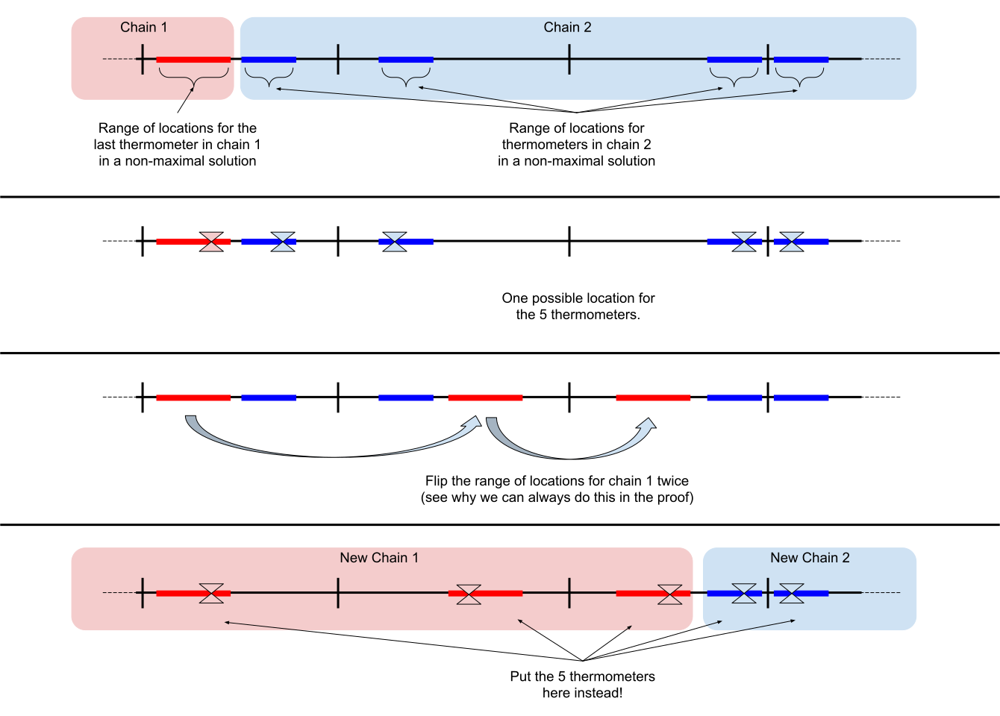

First of all, notice that Xi splits the circle into a sequence of segments, so that throughout each segment, the temperature of all the points is the same. Let's say that the i-th segment is the segment which starts at Xi and goes clockwise. We will use di as the length of the i-th segment. Also note that per the problem statement, there are no adjacent segments with the same temperature, so we can safely ignore the actual temperatures Ti.
We can make the following observations:
Given these observations, and the low limits in Test Set 1, we can iterate through all possible configurations and choose the one that gives the best answer.
Note that if we know the position of a thermometer on segment A that is closest to an adjacent segment B, we can calculate the anticipated position of a thermometer on B. To do so, we need to "mirror" the known position over the common point of the segments. If the mirrored position doesn't belong to the segment B, then it is not possible for segment A to have the closest thermometer at this position.
First, let's assume that the answer is greater than N. We can apply the following greedy strategy to find the optimal answer (we will show below that it actually works).
Let's start with some segment A and assume that this is the only segment. We can put a thermometer at any point of A (except the endpoints, per the problem statement) and it will cover the whole segment. So the interval of valid positions on A is the whole segment. Now, let's consider an adjacent segment B and see how we can put the thermometers on both segments, so that only two thermometers are used. We can mirror the interval of valid positions in A over the common point of these segments. The interval of valid positions in B is the intersection of the mirrored segment and B. We will refer to this operation as propagation.
We can continue propagating this interval through as many segments as possible and stop if the propagated interval would be empty. If we propagate the last interval back to A through all the intermediate segments, this will give us valid positions for the thermometers to cover all these segments with one thermometer per segment.
As we cannot propagate the current interval anymore, we can define a new interval of valid positions on the current segment, taking into account the old one, effectively putting two thermometers on this segment, and repeat the process again. Once we reach segment A, we should verify that the last interval begins before the first interval ends, so that we could put two thermometers on segment A.
The answer will be N (as we have to put at least one thermometer on each segment) plus the number of times we had to start with the new interval, effectively putting two thermometers on the corresponding segment. We can try all segments as the starting one and choose the best answer. Again, the proof that this always works is given below.
Now let's see how to handle the case of the answer being equal to N, when we put exactly one thermometer on each segment. If we assume that zi is the position of a thermometer on segment i, measured from the segment's beginning (point Xi), then, we can calculate the other positions as follows:
z2 = d1 - z1
z3 = d2 - z2 = d2 - d1 - z1
...
zN = dN-1 - zN-1 = dN-1 - dN-2 + dN-3 - ... +/- z1
z1 = dN - zN = dN - dN-1 + dN-2 - dN-3 + ... +/- z1
These equations give us a quick test for whether the answer could be N.
In case N is even:
z1 = dN - dN-1 + dN-2 - dN-3 + ... - d1 + z1, or, subtracting z1 from both sides:
0 = dN - dN-1 + dN-2 - dN-3 + ... - d1
As long as the above holds, any z1 will satisfy the equation. The caveat here is that some of the zis may not be inside of the corresponding segments. So we need to verify that we can do the same propagation as we did earlier, and reach the first segment without adding the second thermometer on any segment. If we can do so, then the answer is N.
In case N is odd:
z1 = dN - dN-1 + dN-2 - dN-3 + ... + d1 - z1, or, adding z1 to both sides:
2z1 = dN - dN-1 + dN-2 - dN-3 + ... + d1
In this case, there is exactly one value for z1. As in the previous case, we need to verify that this value produces a valid set of positions, and we can do this by propagating z1 through all the segments. If we can do so, then the answer is N.
Propagating an interval through all segments is O(N), and we do this at most once to check N as an answer, and do this N times if the answer is not N. This gives us O(N2) running time.
Proof of greedy solution
Here is an image which roughly describes the steps in the proof below:

We will concentrate on the case when the answer is greater than N, since for the case of N the solution is constructive.
Let's define a few additional terms.
A chain is a sequence of adjacent segments, where there is some placement of thermometers such that each segment can be covered by one thermometer, except for the first and the last ones, each of which requires two thermometers. Note that it is possible that a chain covers the whole circle, starting in some segment, wrapping around the whole circle, and ending at the same segment.
A maximum chain is a chain that cannot be extended clockwise by adding the next segment because it is not possible to place the thermometers (as per the definition of a chain) to cover such a chain.
Two chains are consecutive if the last segment of one chain is the first segment of the other chain. Note that on the common segment, we will have to use two thermometers.
A valid sequence of chains is a sequence of consecutive chains containing all the given segments.
Note that any valid positioning of the thermometers is a valid sequence of chains, and the number of thermometers there is N plus the number of chains. The optimal answer is achieved in the positioning requiring the smallest number of chains.
Lemma 1. If we have a valid sequence of chains and the first chain is not a maximum chain, we can take some segments from the next chain(s) and attach them to this one until it becomes maximum, while keeping the sequence valid and not increasing the total number of chains.
Proof
Let's add a few more terms to our vocabulary.
The position of a thermometer on the i-th segment is the distance between the thermometer and Xi.
A chain flexibility interval is a set of valid thermometer positions on a segment of a chain, which can be correctly propagated through the whole chain. Note that it is always a subsegment (maybe of length 0) of a segment.
The first and last flexibility interval of a chain are the instances of the chain flexibility interval on the first and last segment of the chain accordingly.
We can now redefine a valid sequence of chains as a sequence of consecutive chains, containing all the segments, such that on every segment connecting two chains, if (xlast, ylast) and (xfirst, yfirst) are the last and first flexibility intervals of these chains, then xlast ≤ yfirst.
Now let's consider the first and second chains in some configuration:
For clarity:
Let's connect segment b to the first chain. Then:
First, let's consider the case where the initial flexibility intervals of the chains are intersecting (x2 ≤ y2). In this case the new configuration is valid, as a - y1 ≤ a - x2, so we can go on to try the next segment if possible.
Otherwise, if the original flexibility intervals were not intersecting (x2 > y1), then the new configuration is not valid. Again, the new flexibility intervals will be (a - y2, a - x2) and (a - y1, min(b, a - x1)), they will not intersect, and the first flexibility interval of the second chain will come before the last flexibility interval of the first chain (this is why the configuration is invalid).
However, we can notice that because (a - y2, a - x2) belongs to the second chain, it could be successfully propagated to the next segment (c) by definition. But, because (a - y1, min(b, a - x1)) is even closer to the segment border, we must be able to propagate it as well. This means that we can also attach the next segment to the first chain:
Now the configuration is valid, because b - min(b, a - x1) ≤ b - (a - y2), and x1 ≤ y2 by definition.
What if we don't have a second segment to attach? Then we won't be able to attach the first one either, since the flexibility intervals were not intersecting, and the flexibility interval of a single segment is the whole segment.
Lemma 2. An optimal answer can always be achieved with a sequence of maximum chains and one potentially non-maximum chain.
Proof
Let's consider the first chain of an optimal answer. Let's attach segments from the next chain while we can (we are allowed to do so by Lemma 1). Repeat with the next chain, and so on. When we reach the last chain, leave it alone. Now all the chains except for the last one are maximum, and the last one can be either maximum or not.
The solution described above is building all possible sequences mentioned in Lemma 2, and by that lemma, some of them will be optimal.
Note that our proof has not dealt with small chains properly—that is, chains of length 1, 2 and 3 may not work properly in the proof above, but they are easy to deal with independently as special cases.